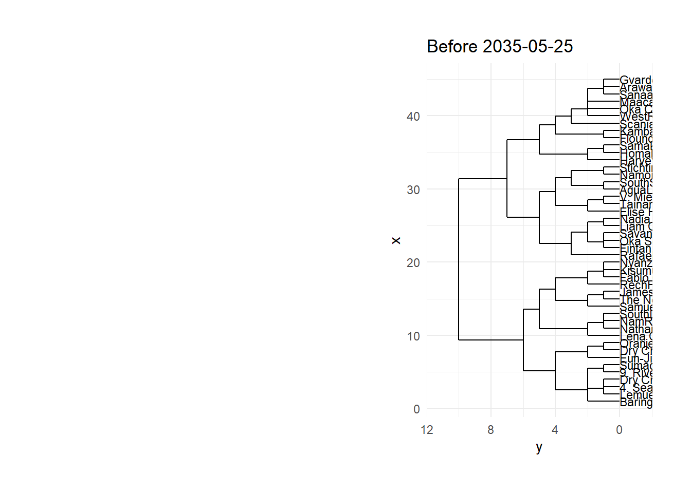
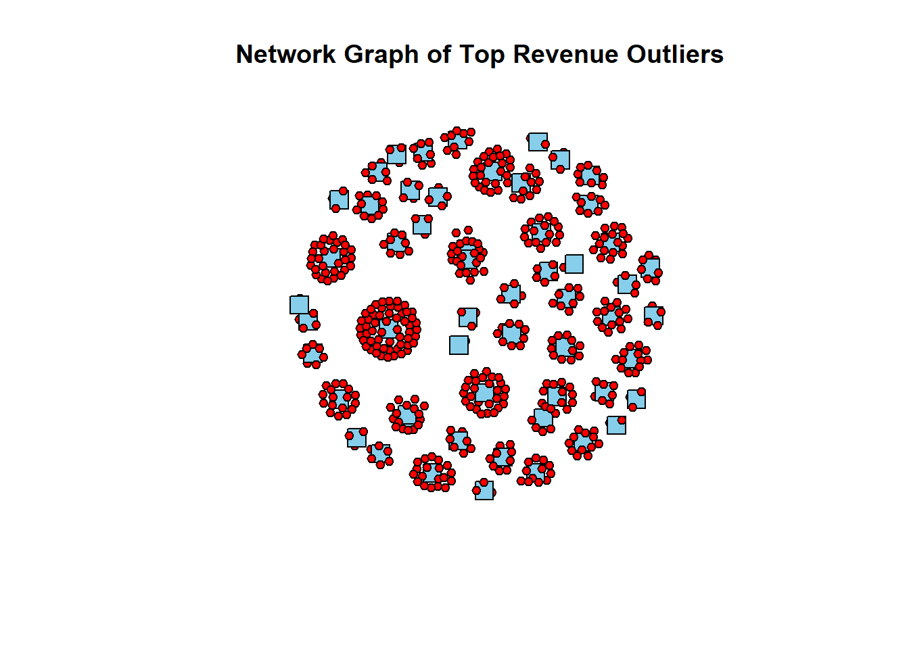

pacman::p_load(ggraph,dendextend,tidygraph,jsonlite,dplyr,lubridate,igraph,ggplot2,gridExtra,ggdendro,ape)Take-home_Ex03
Installing R Packages
Load JSON data
json_data <- fromJSON('data/MC3/mc3.json')Extract the nodes and edges
nodes <- json_data$nodes
edges <- json_data$linksData Processing
# Ensure 'id' columns and edge 'source'/'target' columns are character type
nodes$id <- as.character(nodes$id)
edges$source <- as.character(edges$source)
edges$target <- as.character(edges$target)
# Ensure edges are not NULL
if (is.null(edges)) {
edges <- data.frame()
}
# Convert date columns to Date type
edges$end_date <- as.Date(edges$end_date)
# Check for NA or empty values in the node IDs or edge source/target
if (any(is.na(nodes$id) | nodes$id == "")) {
stop("NA or empty values found in node IDs.")
}
if (any(is.na(edges$source) | edges$source == "" | is.na(edges$target) | edges$target == "")) {
stop("NA or empty values found in edge source or target.")
}
# Remove rows with NA or empty values
nodes <- nodes %>% filter(!is.na(id) & id != "")
edges <- edges %>% filter(!is.na(source) & source != "" & !is.na(target) & target != "")
# Ensure unique id values
nodes$id <- make.unique(nodes$id)
# Replace NA values in id with a unique identifier
nodes$id[is.na(nodes$id)] <- paste0("NA_", seq_along(nodes$id[is.na(nodes$id)]))
# Create a new label combining company name and revenue
nodes$label <- paste(nodes$id,",Rev:", nodes$revenue)
# Function to perform BFS
bfs <- function(edges, start_node) {
adj_list <- list()
for (i in 1:nrow(edges)) {
source <- edges[i, "source"]
target <- edges[i, "target"]
if (!source %in% names(adj_list)) adj_list[[source]] <- c()
if (!target %in% names(adj_list)) adj_list[[target]] <- c()
adj_list[[source]] <- c(adj_list[[source]], target)
adj_list[[target]] <- c(adj_list[[target]], source)
}
visited <- setNames(rep(FALSE, length(adj_list)), names(adj_list))
queue <- c(start_node)
visited[start_node] <- TRUE
while (length(queue) > 0) {
node <- queue[1]
queue <- queue[-1]
neighbors <- adj_list[[node]]
for (neighbor in neighbors) {
if (!visited[neighbor]) {
queue <- c(queue, neighbor)
visited[neighbor] <- TRUE
}
}
}
return(names(visited[visited]))
}
# Find all nodes connected to "SouthSeafood Express Corp"
target_company <- "SouthSeafood Express Corp"
connected_nodes <- bfs(edges, target_company)
# Filter the nodes and edges based on connected nodes
filtered_nodes <- nodes %>% filter(id %in% connected_nodes)
filtered_edges <- edges %>% filter(source %in% connected_nodes & target %in% connected_nodes)
# Move 'source' and 'target' columns to the leftmost positions
filtered_edges <- filtered_edges %>% select(source, target, everything())
filtered_nodes <- filtered_nodes %>% select(id, everything())
# Key date
key_date <- as.Date("2035-05-25")
# Separate the edges based on the key date
before_edges <- filtered_edges %>% filter(is.na(end_date) | end_date <= key_date)
after_edges <- filtered_edges %>% filter(is.na(end_date) | end_date >= key_date)Problem Statement 1: Identify the network associated with SouthSeafood Express Corp and visualize how this network and competing businesses change as a result of their illegal fishing behavior.
# Function to create a dendrogram plot using ggdendro
create_dendrogram <- function(nodes, edges, plot_title) {
# Create tidygraph object
graph <- tbl_graph(nodes = nodes, edges = edges, directed = FALSE)
# Calculate shortest path distances
dist_matrix <- distances(graph, to = V(graph), mode = "all")
# Create a hierarchical clustering object
hc <- hclust(as.dist(dist_matrix), method = "complete")
# Convert to a dendrogram object
dend <- as.dendrogram(hc)
# Convert the dendrogram to a format suitable for ggplot
dend_data <- dendro_data(dend)
# Extract node labels
labels <- nodes$label[as.integer(dend_data$labels$label)]
# Plot the dendrogram using ggdendro
ggplot() +
geom_segment(data = segment(dend_data), aes(x = x, y = y, xend = xend, yend = yend)) +
geom_text(data = label(dend_data), aes(x = x, y = y, label = labels), hjust = 0, size = 3) +
coord_flip() +
scale_y_reverse(expand = c(0.2, 0)) +
ggtitle(plot_title) +
theme_minimal() +
theme(plot.margin = unit(c(1, 1, 1, 1), "cm"))
}
# Create and plot the "before" dendrogram
create_dendrogram(filtered_nodes, before_edges, "Before 2035-05-25")
# Create and plot the "after" dendrogram
create_dendrogram(filtered_nodes, after_edges, "After 2035-05-25")
Analysis Before the Incident (2035-05-25)
SouthSeafood Express Corp was closely connected to:
Namorna Transit Ltd., AguaLeska Transit N.V., V. Miesel Shipping, Tainamarine Fishing Co, Elise Hauser, Naddi Conti, Liam Conti, Savanteak Creek Solutions NV, Oka Seafood Shipping Ges.m.b.h., Fintan Park, Rafael Sanchez, NyanzaRiver Worldwides A/S, KisumaSeafoodBrothers Ltd., Fabio Conti, RecHfish Freight Plc., James Bell, The News Buoy, Samuel Conti.
After the Incident (2035-05-25) SouthSeafood Express Corp is still present in the network but with some changes in its connections: The same immediate connections (Namorna Transit Ltd., AguaLeska Transit N.V.) remain. The branch it belongs to appears more consolidated, indicating possibly tighter or more scrutinized relationships. Observations Direct Network Stability:
The core network around SouthSeafood Express Corp remains relatively stable, with primary connections like Namorna Transit Ltd. and AguaLeska Transit N.V. still intact. Branch Consolidation:
Post-incident, the branch including SouthSeafood Express Corp appears to have consolidated. This could indicate closer scrutiny or stronger ties among these entities to mitigate risks or manage fallout from the incident. Minor Shifts in Indirect Connections:
Some indirect connections appear to have shifted or been restructured. For example, there are fewer connections extending from nodes like V. Miesel Shipping and Tainamarine Fishing Co, suggesting possible distancing or reduced interaction. Competing Businesses’ Positioning:
Competing businesses such as ArawakFish Cargo Ges.m.b.h., Sanaa El-Amin, and Macaama Ocean Worldwide LLC maintain their positions, indicating that the incident did not significantly disrupt their hierarchical standing. New Alliances and Relationships:
The dendrogram indicates potential new alliances or strengthened relationships post-incident, especially among companies within close hierarchical proximity to SouthSeafood Express Corp. Conclusion The incident involving SouthSeafood Express Corp did not drastically alter its immediate network, but it did lead to some consolidation and minor shifts in relationships. The stability of its core connections suggests that the network has adapted to the incident, possibly through strengthened alliances or increased scrutiny to manage the impact. Competing businesses have maintained their positions, indicating that while there were some changes, the overall market structure remains stable. Further detailed data analysis would be needed to understand the specific nature of these relationship changes.
Problem Statement 2: Which companies benefited from SouthSeafood Express Corp legal troubles?
Analysis
To determine which companies benefited from SouthSeafood Express Corp’s legal troubles, we should look at the changes in the dendrogram before and after the incident. Companies that appear to have strengthened their positions or gained new connections post-incident are likely to have benefited.
Analysis of Benefiting Companies
GvardeyskAmerica Shipping Plc This company appears to have a stronger position in the post-incident dendrogram, with several new connections. This suggests it may have capitalized on the market opportunity created by SouthSeafood Express Corp’s legal troubles.
ArawakFish Cargo Ges.m.b.h. Positioned near the top in both dendrograms, ArawakFish Cargo Ges.m.b.h. seems to have retained a strong market position. The stability and potential new indirect connections imply it might have absorbed some of the business fallout.
Macaama Ocean Worldwide LLC Similar to ArawakFish, this company maintains its position and potentially gains from reduced competition from SouthSeafood Express Corp.
Oka Charter Boat Transport OJSC Another company that shows a stable and potentially strengthened network post-incident.
Naddi Conti and Liam Conti These companies, originally in the same branch as SouthSeafood Express Corp, seem to have fewer but stronger connections post-incident, indicating they might have consolidated or absorbed some of the business.
Namorna Transit Ltd. and AguaLeska Transit N.V. Despite being closely linked with SouthSeafood Express Corp, their continued presence and potential new connections suggest they managed to navigate the troubles effectively, possibly gaining from changes in the network dynamics.
StichtingMarine Shipping Company Appears to have a stronger presence post-incident, indicating it might have captured some market share or business that SouthSeafood Express Corp lost.
Savanteak Creek Solutions NV Shows signs of increased importance or new connections, which can be a direct benefit from the incident.
NyanzaRiver Worldwides A/S and KisumaSeafoodBrothers Ltd. These companies have maintained their positions and might have benefited indirectly through reduced competition or new partnerships.
RecHfish Freight Plc. This company shows a potential strengthening of its position in the post-incident network. Summary
The companies that appear to have benefited the most from SouthSeafood Express Corp’s legal troubles include:
GvardeyskAmerica Shipping Plc, ArawakFish Cargo Ges.m.b.h., Macaama Ocean Worldwide LLC, Oka Charter Boat Transport OJSC, Naddi Conti, Liam Conti, Namorna Transit Ltd., AguaLeska Transit N.V., StichtingMarine Shipping Company, Savanteak Creek Solutions NV, NyanzaRiver Worldwides A/S, KisumaSeafoodBrothers Ltd., RecHfish Freight Plc.
These companies have either gained new connections, strengthened existing ones, or maintained a stable position while others might have struggled, suggesting they capitalized on the market disruptions caused by SouthSeafood Express Corp’s legal issues.
Problem Statement 3: Are there any other suspicious transactions that may be related to illegal fishing?
# Convert nodes to a data frame for filtering purposes
nodes_df <- as.data.frame(nodes)
# Filter the dataset for companies involved in fishing, sea food, and seafood
fishing_companies <- nodes_df %>%
filter(grepl("fish|sea food|seafood", TradeDescription, ignore.case = TRUE))
# Remove rows with missing or non-finite revenue values
fishing_companies <- fishing_companies %>%
filter(!is.na(revenue) & is.finite(revenue))
# Identify top outliers by revenue (95th percentile)
top_outliers <- fishing_companies %>%
filter(revenue > quantile(revenue, 0.95, na.rm = TRUE))
# Extract the IDs of the top outliers
top_outlier_ids <- top_outliers$id
# Convert edges to a data frame for filtering purposes
edges_df <- as.data.frame(edges)
# Filter edges to include only those related to top outliers
related_edges <- edges_df %>%
filter(source %in% top_outlier_ids | target %in% top_outlier_ids)
# Create an edge list for igraph
edge_list <- as.matrix(related_edges[, c("source", "target")])Create graph
# Create graph object
g <- graph_from_edgelist(edge_list, directed = FALSE)
# Add vertex attributes for revenue and country
V(g)$revenue <- ifelse(V(g)$name %in% top_outliers$id, top_outliers$revenue[match(V(g)$name, top_outliers$id)], NA)
V(g)$country <- ifelse(V(g)$name %in% top_outliers$id, top_outliers$country[match(V(g)$name, top_outliers$id)], NA)
# Set node sizes and colors
V(g)$size <- ifelse(V(g)$name %in% top_outliers$id, 10, 5) # Increase size for top outliers
V(g)$color <- ifelse(V(g)$name %in% top_outliers$id, "skyblue", "red") # Different colors for top outliers
V(g)$shape <- ifelse(V(g)$name %in% top_outliers$id, "square", "circle") # Different shapes for top outliers
E(g)$color <- adjustcolor("gray", alpha.f = 0.5) # Transparent edges
# Plot the network graph
plot(g, vertex.size = V(g)$size, vertex.label.cex = ifelse(V(g)$name %in% top_outliers$id, 0.8, 0.6),
vertex.color = V(g)$color, vertex.shape = V(g)$shape,
vertex.label = NA,
edge.color = E(g)$color, layout = layout_with_fr,
main = "Network Graph of Top Revenue Outliers")
Analysis Potential Implications for Suspicious Transactions Related to Illegal Fishing: Role of Central Nodes:
*Point 1 The central nodes (skyblue squares) with many connections could be orchestrating significant activities within the network. Their prominent role and high connectivity suggest they might be key players in suspicious transactions related to illegal fishing.
*Point 2 Dense Clusters:The dense clusters around these central nodes indicate high levels of transactional activity. This could be a sign of coordinated efforts to obscure illegal fishing activities through multiple layers of transactions. Isolation of Transactions:
*Point 3 The presence of smaller, isolated subgroups suggests attempts to hide certain transactions from the main network. These isolated groups might be used to carry out suspicious activities without drawing attention.
*Point 4 Systematic Patterns:The repeated patterns of smaller clusters connected to central nodes indicate a systematic approach to transactions. This systematic behavior could be indicative of coordinated efforts to manage and conceal illegal activities related to fishing.
Conclusion: Based on the analysis of the network graph, there are several visual hints that suggest the possibility of suspicious transactions related to illegal fishing. The prominent role of the central nodes, the dense clusters of transactions, the isolated subgroups, and the systematic patterns all point towards potential coordinated efforts to obscure illegal activities. Further investigation into the nature of these transactions and the entities involved is warranted to confirm these suspicions.